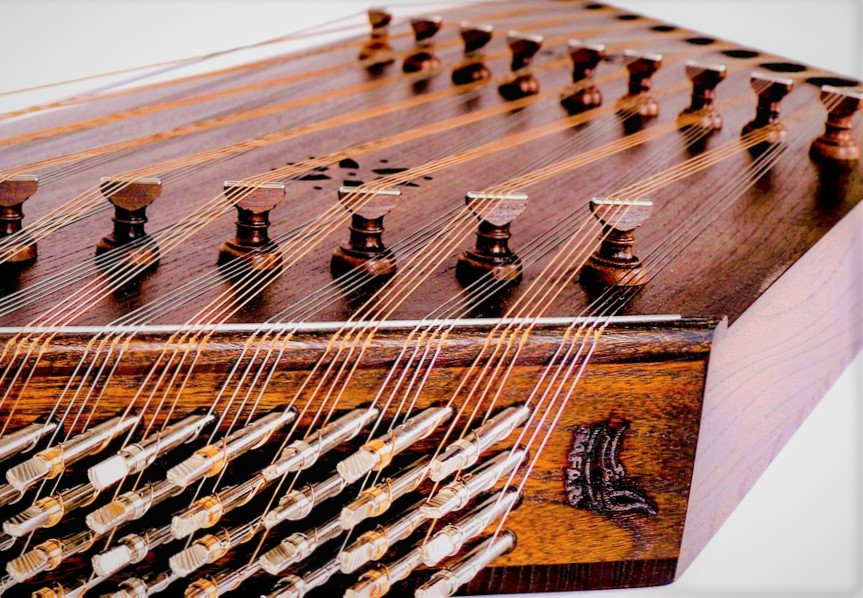
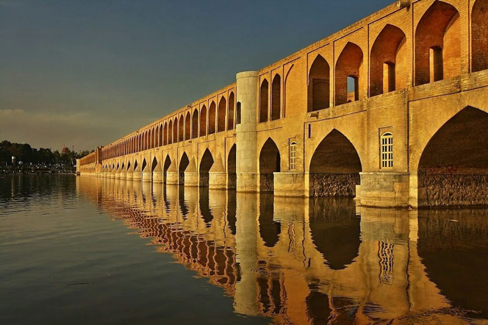
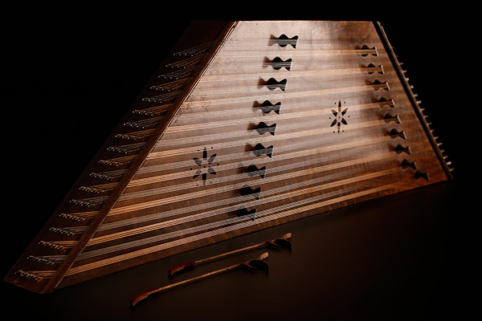
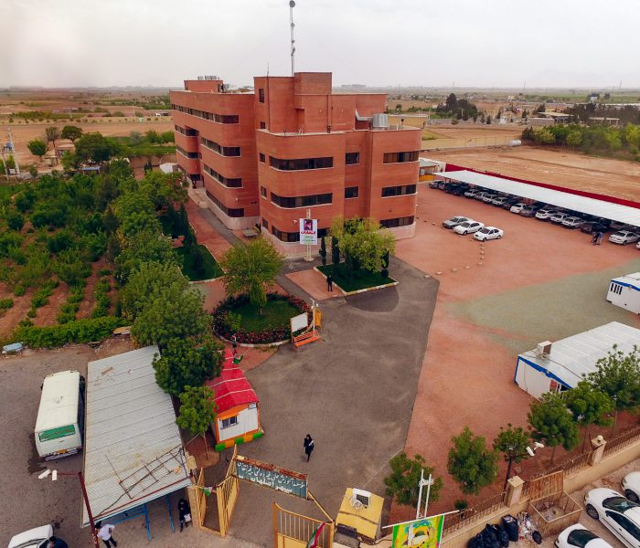
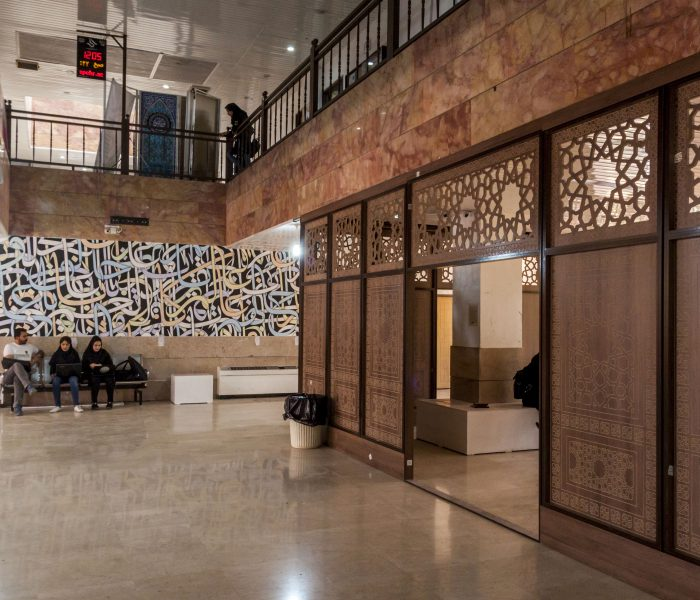
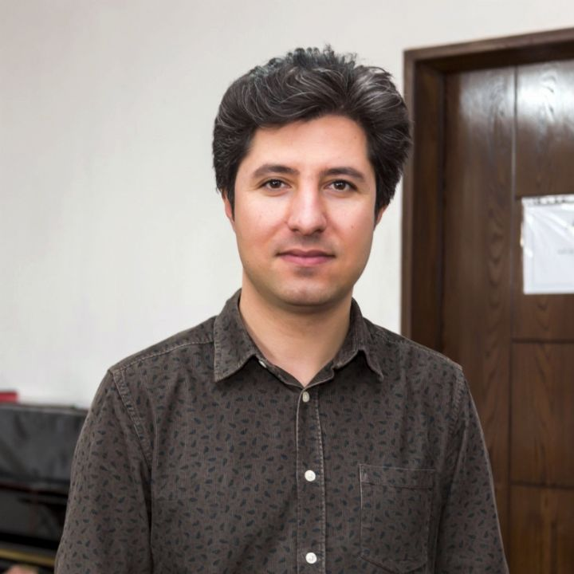
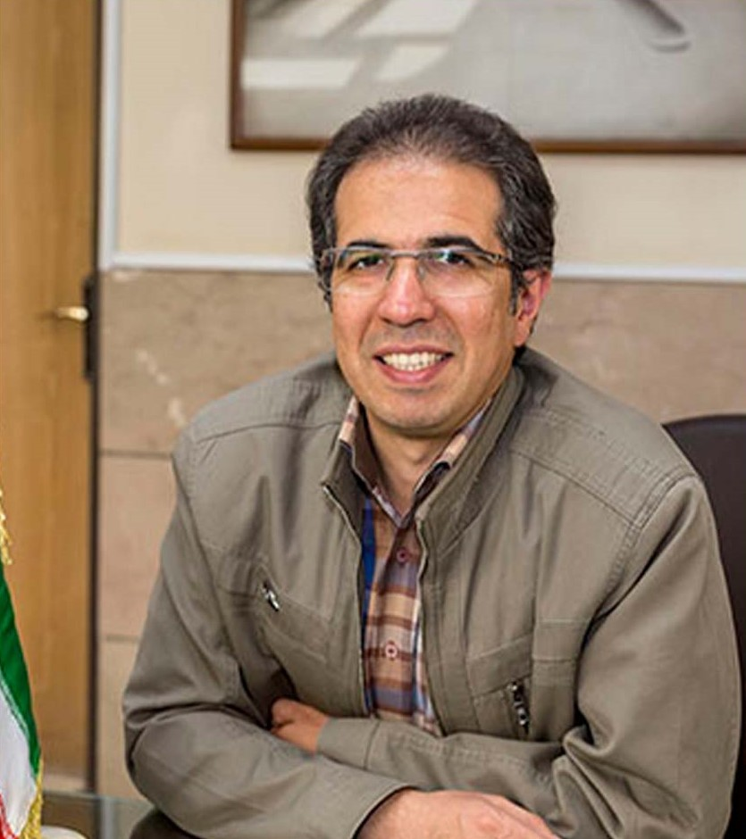
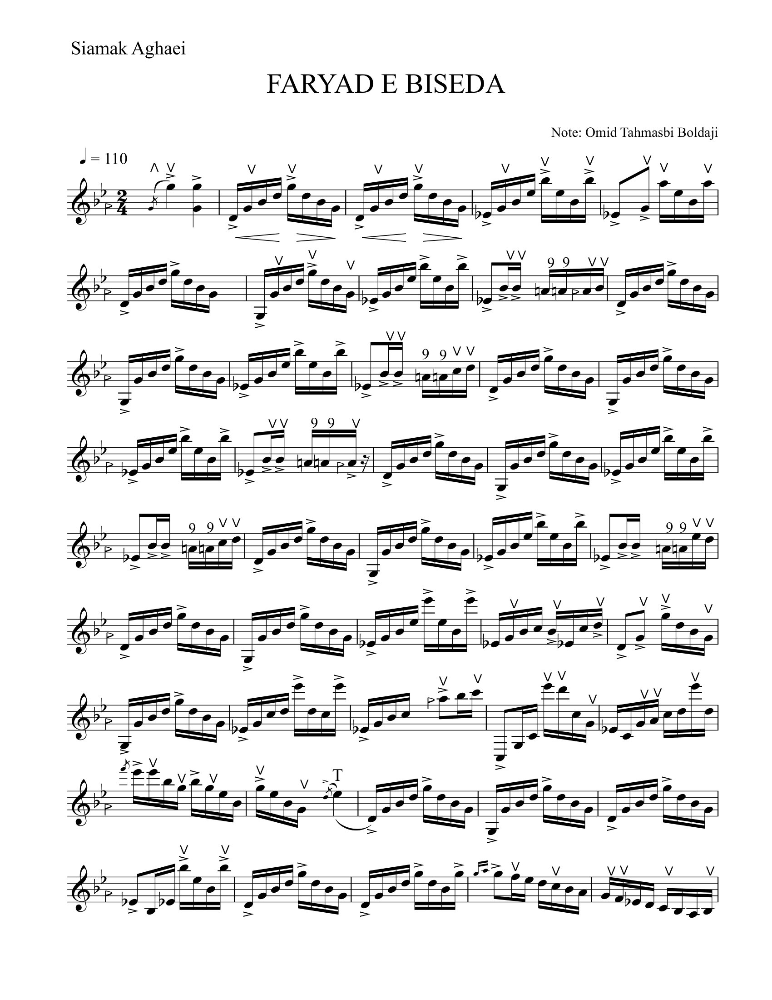
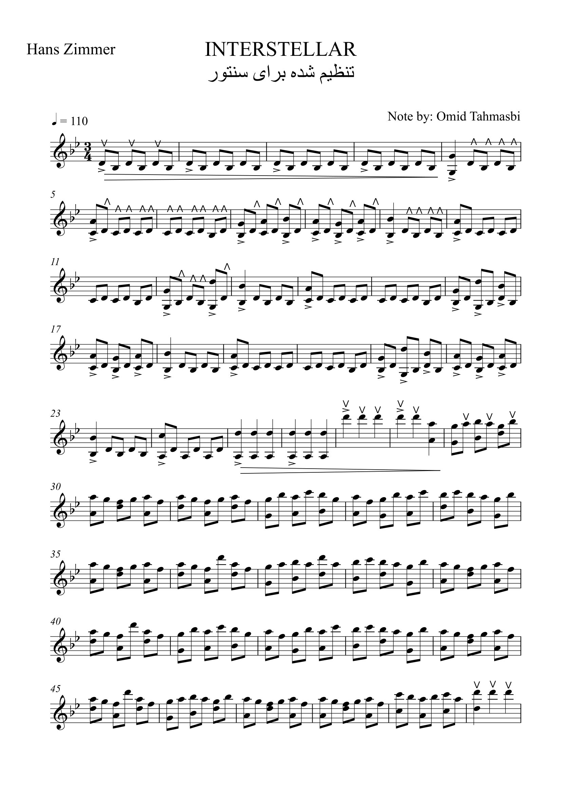

My name is Omid Tahmasebi, a Santour (Iranian Dulcimer) player.
I have been playing this instrument for 15 years.

I started playing Santour at the age of 16.
When I got to know this instrument more,I started learning music theory and specialized playing of
santoor from Mr. Abbas Asadi at the age of 19.
He is a well-known music teacher
in Isfahan city and he is teaching music to teenagers at Ney-Davood School in Isfahan city.

At the same time as I was studying at Farhangian University in Educational Sciences,
my desire to perform a concert in the university's amphitheater was indescribable.
The sound and resonance of this instrument soon became a part of my soul.
During these years, the sound of santour, always reminds me of the sound of raindrops.

In 2015, after I graduated from Farhangian University, I participated in the Art Field Exam and was
accepted in Playing Iranian Music at Sepehr University of Isfahan.

Sepehr Art University Of Isfahan

Sepehr Art University Of Isfahan
It was the first semester in Sepehr University where I met famous professors such as Kaveh Motamedian,
Hamed Yunesi and Saeid Honarmand.

Kaveh Motamedian
Mr. Hamed Yunesi was the director of the music department of Sepehr University and Mr. Kaveh Motamedian
was teaching The Elements Of Music course of Ralph Turek to the students in the music faculty.
My acquaintance with these professors had a strange effect on my personality.

Hamed Yunesi
Unfortunately, due to work reasons, I had to cancel my studies at the same time as the second semester.
A year after I left Sepehr University, in 2018 I found out that Mr. Siamak Aghaei is conducting
professional courses for Santour.
Siamak Aghaei is the most famous santour player in Iran. He is graduated in Composition
at Tehran University and he is one of Parviz Meshkatian's (one of the most
influential musicians in the history of Iranian traditional music) prominent students.
Siamak Aghaei has collaborated with prominent American orchestra groups such as "Knights"
under the direction of Colin Jacobsen and "Silk Road" under the direction of Yo-Yo Ma.
"Yad Bad" album is his famous work.
Siamak Aghaei
I quickly enrolled in these courses and was able to attend two sessions in the specialized
courses of Mr. Siamak Aghaei in the cities of Shahrekord.
I am the third person in the row on the right
My close encounter with Mr. Siamak was memorable. The answer to all my questions about
this instrument was with Siamak Aghaei, and I will never forget how patiently he
taught me all the minor and specialized points. After my meeting with Mr. Siamak Aghaei,
important changes in my playing style were revealed, which I owe to him for all these useful achievements.
With Siamak Aghaei in Shahrekord
Now I will share with you some of my written and recorded works :
[1] Arranging and writing the piece "Frayad-E-Biseda" by Siamak Aghaei for santour

click to download the full version :copyright-protection !the permission of the owner is required.[2] Arranging and writing the piece "Interstellar" by Hans Zimmer for santour

click to download the full version :[3] Before the performance of the concert in the amphitheater of Borujen - Winter 2022[4] Leaden Hearts by Omid Tahamasebi - composed for Santour - 2020 click to download the full version :copyright-protection !the permission of the owner is required.[5] it is Recorded in Spring 2023 :vocal : Pejhman Payandansantour : Omid Tahmasebiney : Mustafa Moghimi
 Siamak Aghaei
Siamak Aghaei
 I am the third person in the row on the right
I am the third person in the row on the right
 With Siamak Aghaei in Shahrekord
With Siamak Aghaei in Shahrekord
 click to download the full version :
copyright-protection !the permission of the owner is required.
[5] it is Recorded in Spring 2023 :vocal : Pejhman Payandansantour : Omid Tahmasebiney : Mustafa Moghimi
click to download the full version :
copyright-protection !the permission of the owner is required.
[5] it is Recorded in Spring 2023 :vocal : Pejhman Payandansantour : Omid Tahmasebiney : Mustafa Moghimi